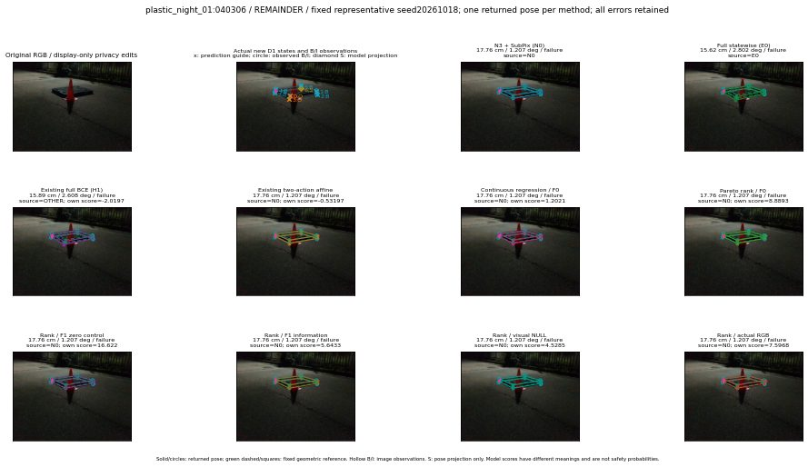

실선은 반환 자세, 초록 점선은 고정 기하 참조입니다. S는 영상 관측이 아닙니다. 점수는 모델별 의미가 다르며 보정된 안전 확률이 아닙니다. 개인정보 처리는 표시 사본에만 적용했습니다.
| 방법·seed | 위치 / 회전 / 공동성공 | 실제 출처 | 선택 후보 | 각 모델 자체 점수 |
|---|---|---|---|---|
| N0 | 17.76 cm / 1.207 deg / failure | N0 | N/A | N/A |
| E0 | 15.62 cm / 2.802 deg / failure | E0 | N/A | N/A |
| E0_REGENERATED | 15.62 cm / 2.802 deg / failure | E0 | E0_REGENERATED | N/A |
| POSEFIX_SUBPIX_PF_ANCHOR | 16.92 cm / 2.825 deg / failure | OTHER | N/A | N/A |
| POSEFIX_SUBPIX_YOLO_ANCHOR | 16.92 cm / 2.825 deg / failure | OTHER | N/A | N/A |
| D1_H1_MLP_s20261018 | 15.89 cm / 2.608 deg / failure | OTHER | G10/ORIGINAL_WD/selected | -2.0196800231933594 |
| D1_H1_MLP_s20261019 | 15.89 cm / 2.608 deg / failure | OTHER | G10/ORIGINAL_WD/selected | -1.7716786861419678 |
| D1_H1_MLP_s20261020 | 15.89 cm / 2.608 deg / failure | OTHER | G10/ORIGINAL_WD/selected | -2.4925947189331055 |
| D1_H1_PAIR_MLP_s20261018 | 17.76 cm / 1.207 deg / failure | N0 | N0 | -1.2598609924316406 |
| D1_H1_PAIR_MLP_s20261019 | 17.76 cm / 1.207 deg / failure | N0 | N0 | -1.3955364227294922 |
| D1_H1_PAIR_MLP_s20261020 | 17.76 cm / 1.207 deg / failure | N0 | N0 | -1.5615627765655518 |
| D1_H1_PAIR_ROLE_AFFINE_s20261018 | 17.76 cm / 1.207 deg / failure | N0 | N0 | -0.5319706797599792 |
| D1_H1_PAIR_ROLE_AFFINE_s20261019 | 17.76 cm / 1.207 deg / failure | N0 | N0 | -0.8023349046707153 |
| D1_H1_PAIR_ROLE_AFFINE_s20261020 | 17.76 cm / 1.207 deg / failure | N0 | N0 | -0.4562106430530548 |
| R_CONT_F0_s20261018 | 17.76 cm / 1.207 deg / failure | N0 | N0 | 1.2020972967147827 |
| R_CONT_F0_s20261019 | 17.76 cm / 1.207 deg / failure | N0 | N0 | 1.1654337644577026 |
| R_CONT_F0_s20261020 | 17.76 cm / 1.207 deg / failure | N0 | N0 | 1.2923266887664795 |
| R_ORDER_F0_s20261018 | 17.76 cm / 1.207 deg / failure | N0 | N0 | 8.889264106750488 |
| R_ORDER_F0_s20261019 | 15.89 cm / 2.608 deg / failure | OTHER | G10/ORIGINAL_WD/selected | 4.743796348571777 |
| R_ORDER_F0_s20261020 | 17.76 cm / 1.207 deg / failure | N0 | N0 | -5.089550971984863 |
| R_ORDER_F1_ZERO_s20261018 | 17.76 cm / 1.207 deg / failure | N0 | N0 | 16.622074127197266 |
| R_ORDER_F1_ZERO_s20261019 | 15.89 cm / 2.608 deg / failure | OTHER | G10/ORIGINAL_WD/selected | 7.395886421203613 |
| R_ORDER_F1_ZERO_s20261020 | 17.76 cm / 1.207 deg / failure | N0 | N0 | 8.588705062866211 |
| R_ORDER_F1_s20261018 | 17.76 cm / 1.207 deg / failure | N0 | N0 | 5.6432719230651855 |
| R_ORDER_F1_s20261019 | 15.89 cm / 2.608 deg / failure | OTHER | G10/ORIGINAL_WD/selected | 6.1898016929626465 |
| R_ORDER_F1_s20261020 | 15.89 cm / 2.608 deg / failure | OTHER | G10/ORIGINAL_WD/selected | 7.034483909606934 |
| V_ORDER_NULL_s20261018 | 17.76 cm / 1.207 deg / failure | N0 | N0 | 4.5284600257873535 |
| V_ORDER_NULL_s20261019 | 15.89 cm / 2.608 deg / failure | OTHER | G10/ORIGINAL_WD/selected | 2.143739700317383 |
| V_ORDER_NULL_s20261020 | 17.76 cm / 1.207 deg / failure | N0 | N0 | 5.439871788024902 |
| V_ORDER_RGB_s20261018 | 17.76 cm / 1.207 deg / failure | N0 | N0 | 7.596803665161133 |
| V_ORDER_RGB_s20261019 | 15.89 cm / 2.608 deg / failure | OTHER | G10/ORIGINAL_WD/selected | 1.036669373512268 |
| V_ORDER_RGB_s20261020 | 17.76 cm / 1.207 deg / failure | N0 | N0 | -3.081740617752075 |